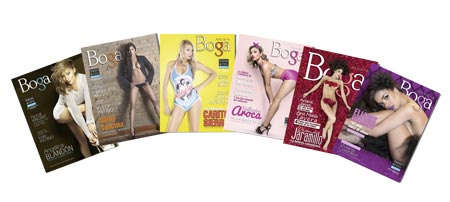

#Batallas
¿Quién es su artista favorito?
Pipe Bueno VS Andy Rivera

Ganador
PIPE BUENO
Comentarios:
Santiago Buenista Rivera: Pues los dos me gustan, cada uno en su género; por ejemplo sigo a Andy Rivera con Será lo mejor y a Pipe Bueno lo sigo con Te hubieras ido antes.
Moni Sánchez: El niño consentido de la música popular Pipe Bueno
¿Cuál de ellas dos tiene la mejor cola?
Kathe Aroca VS Paula Suárez
Ganador
KATHE AROCA
Comentarios:
lamodelsagencia: Sin duda mi amor platónico @kathearoca miren la perfección de su cola.
kathearocafans: La mas bella @kathearoca la mejor cola